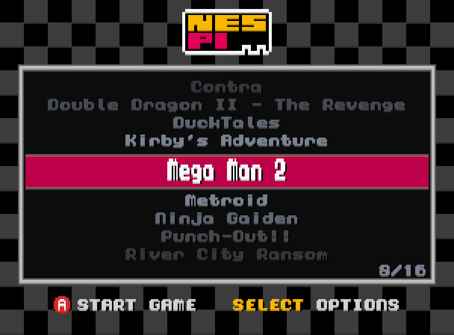
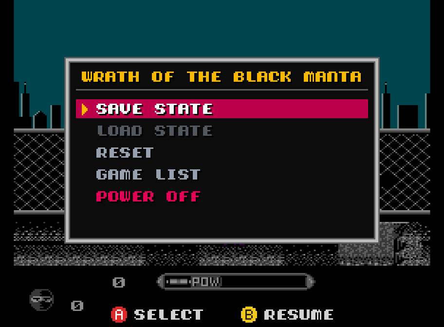
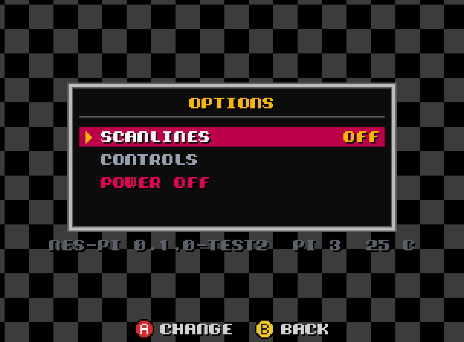

For RPi 3 & 4 · Free · GPLv3
Enjoying it? Buy me a crema caffèPowered by Nestopia, a highly accurate NES emulator supporting hundreds of mappers, battery saves, palettes and optional sprite limit removal.
Gamepads are polled every millisecond. Beam racing keeps video output in sync with the HDMI signal for near-instant response.
Crisp, square pixels at 1080p or 720p, or grandma's TV look with blargg's NTSC filter (S-Video, composite, RF). Optional scanlines, all lag-free.
A lightweight bare-metal system that gets you into the game in just a few seconds.
Save states, screenshots, lazy finger (turbo A and B). All driven from the gamepad.
Got just one game on your SD card? nes-pi boots straight into it!
.nes game files into the nespi folder. No BIOS needed.Games are not included.
The first time you connect a pad, nes-pi asks you to press the buttons you want as A, B, Start and Select. Button hints are shown on screen in the menus. Then, in game:
The second pad you connect is Player 2.